Jaarlijks vergelijkend onderzoek
10 creatinesupplementen vergeleken op 14 parameters door een sportdiëtist.
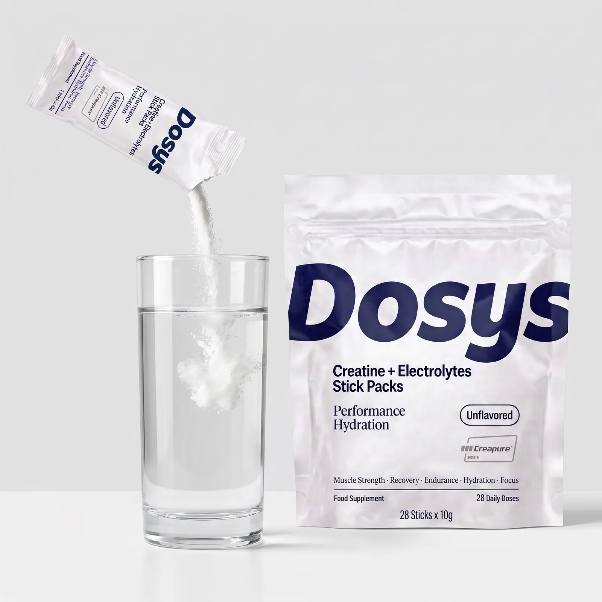
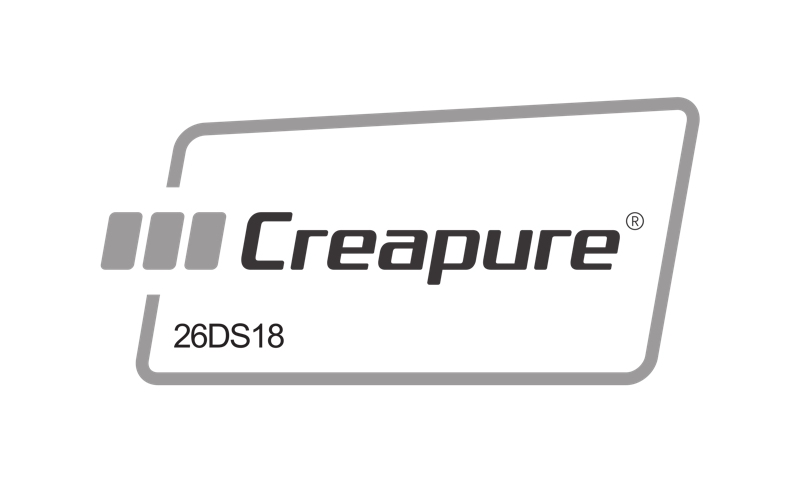
Geproduceerd in de EU (GMP) Aangemeld bij FOD VolksgezondheidScore en aantal reviews laatst gecontroleerd op 19/10/2026.
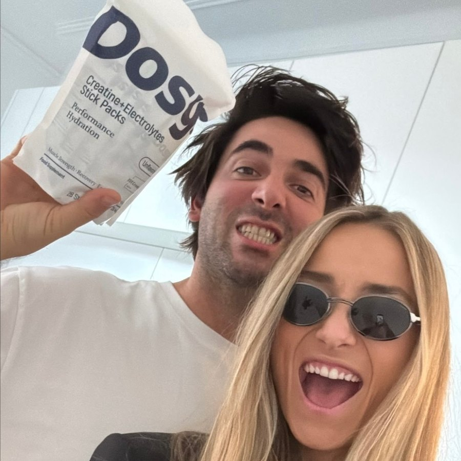
"Heel tevreden over het product en de snelle levering!"
"Die losse zakjes van Dosys zijn echt handig. Creatine en elektrolyten samen, even mengen met water en klaar. Je neemt ze ook makkelijk overal mee naartoe. En met het abonnement hoef je niet telkens aan bijbestellen te denken."
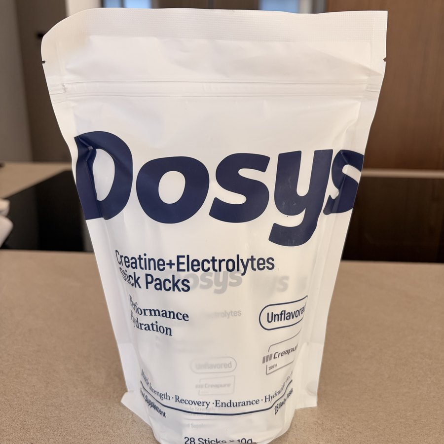
"Uniek concept dat perfect werkt in combinatie met een chaotisch leven. Door de abonnementsformule en de automatische maandelijkse levering, slaag ik er in elke dag mijn Dosys in te nemen. Geen excuses meer. En dan zwijg ik nog over de positieve impact op mijn sportprestaties!"
Cijfers gecontroleerd op 19 oktober 2026 - analyse van 9 reviews op Trustpilot (2026).
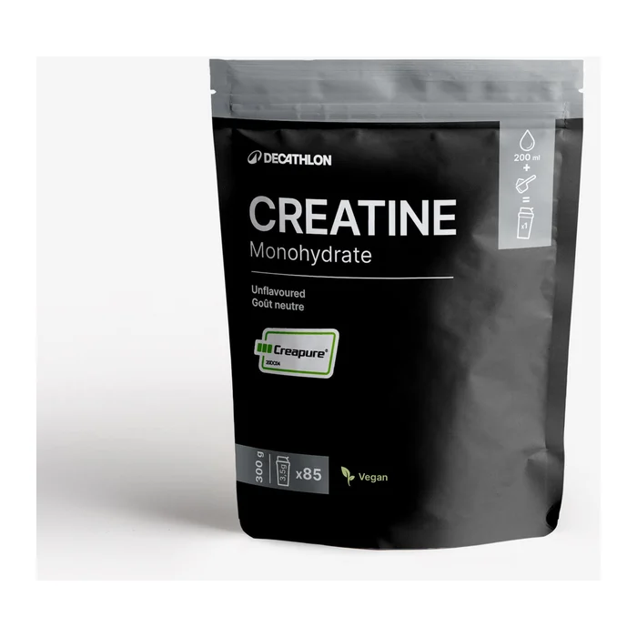
Creatine Monohydraat Creapure® 300 g
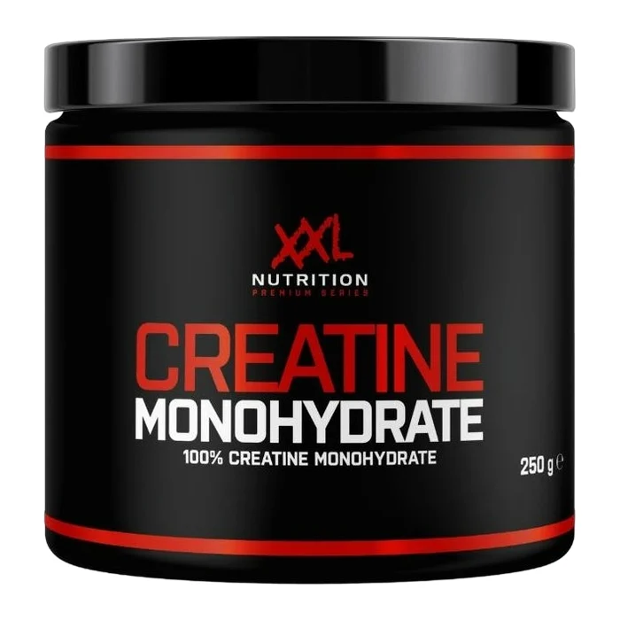
Creatine Monohydraat
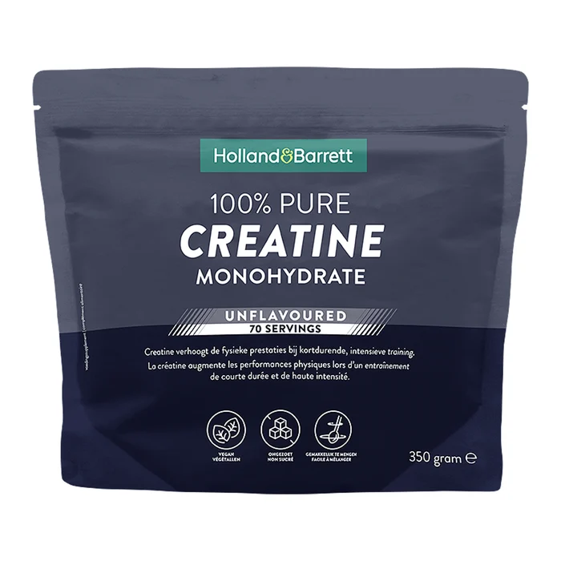
100% Puur Creatine Monohydraat
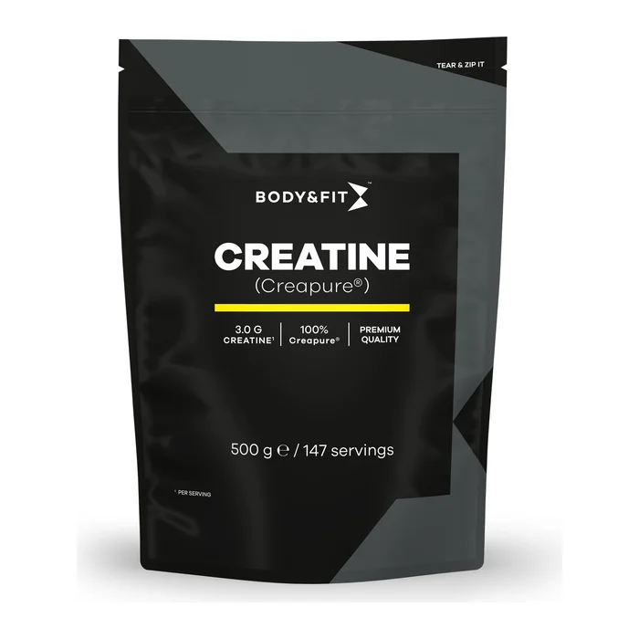
Creapure® Creatine (zak 500 g)
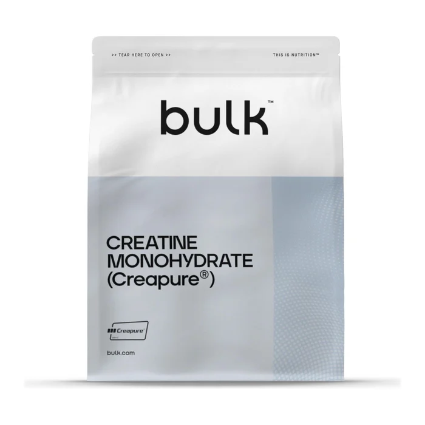
Creapure® Creatine Monohydrate
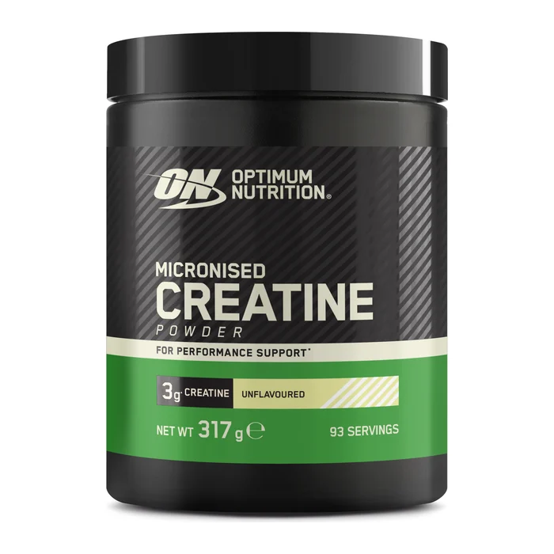
Micronised Creatine Powder
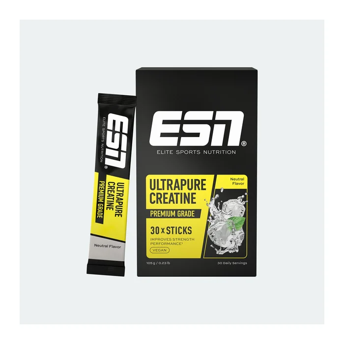
Ultrapure Creatine Sticks
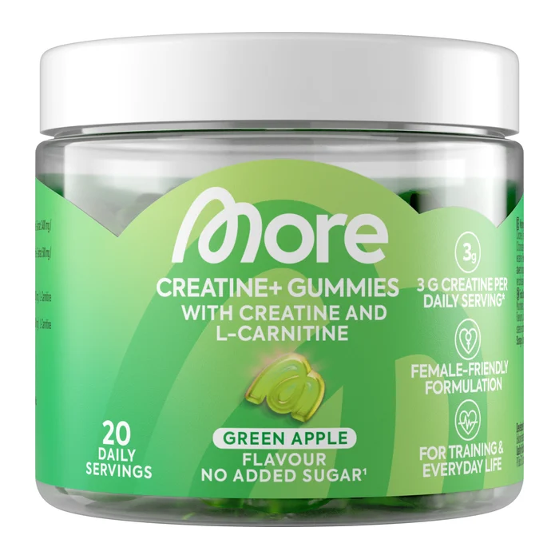
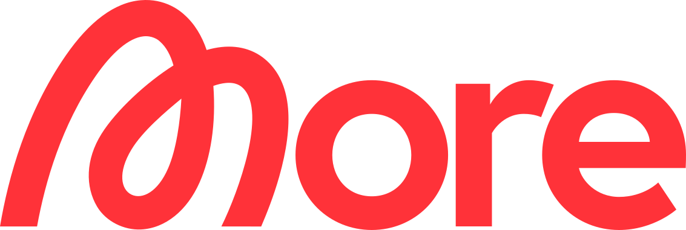
Creatine+ Gummies
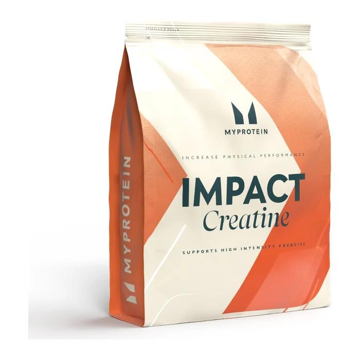
Impact Creatine Monohydrate
Eerste pack €29 met gratis verzending, daarna €39 per 4 weken. Pauzeren of stoppen kan wanneer je wil.
| # | Merk | Totaalscore | Kwaliteit | Gebruiksgemak | Prijs/dag | Prijsklasse |
|---|---|---|---|---|---|---|
| 1 | Creatine + elektrolyten sticks door Dosys | 20/24 | 16/19 | 4/5 | €1,04 | Midden |
| 2 | Decathlon Creatine Monohydraat Creapure® | 15/24 | 15/19 | 0/5 | €0,44 | Midden |
| 3 | XXL Nutrition Creatine Monohydraat | 14/24 | 11/19 | 3/5 | €0,28 | Laag |
| 4 | Holland & Barrett 100% Puur Creatine Monohydraat | 13/24 | 11/19 | 2/5 | €0,37 | Midden |
| 5 | Body & Fit Creapure® Creatine | 12/24 | 12/19 | 0/5 | €0,35 | Midden |
| 5 | Bulk Creapure® Creatine Monohydrate | 12/24 | 12/19 | 0/5 | €0,55 | Midden |
| 5 | Optimum Nutrition Micronised Creatine Powder | 12/24 | 10/19 | 2/5 | €0,54 | Midden |
| 8 | ESN Ultrapure Creatine Sticks | 11/24 | 7/19 | 4/5 | €0,80 | Midden |
| 9 | More Nutrition Creatine+ Gummies | 9/24 | 6/19 | 3/5 | €2,72 | Hoog |
| 10 | Myprotein Impact Creatine Monohydrate | 8/24 | 7/19 | 1/5 | €0,28 | Laag |
*Opmerking: in het onderzoek Body & Fit, Bulk en Optimum Nutrition delen met 12/24 de 5e plaats. Bij een gelijke totaalscore sorteren we eerst op de deelscore kwaliteit en vervolgens op gebruiksgemak; volledig gelijke scores staan in alfabetische volgorde. Prijs per dag = (prijs van de verpakking + verzendkosten naar België) gedeeld door het aantal porties van 5 g. Verpakkingsprijs = reguliere prijs in de webshop op 12/10/2026, zonder tijdelijke promoties. Bij poeders tellen we het aantal gram poeder gedeeld door 5; bij gummies rekenen we om op het creatine-monohydraatgehalte. Dosys: eerste pack €29 met gratis verzending (€1,04/dag), daarna €39 + €4,95 verzending per 4 weken (€1,57/dag).
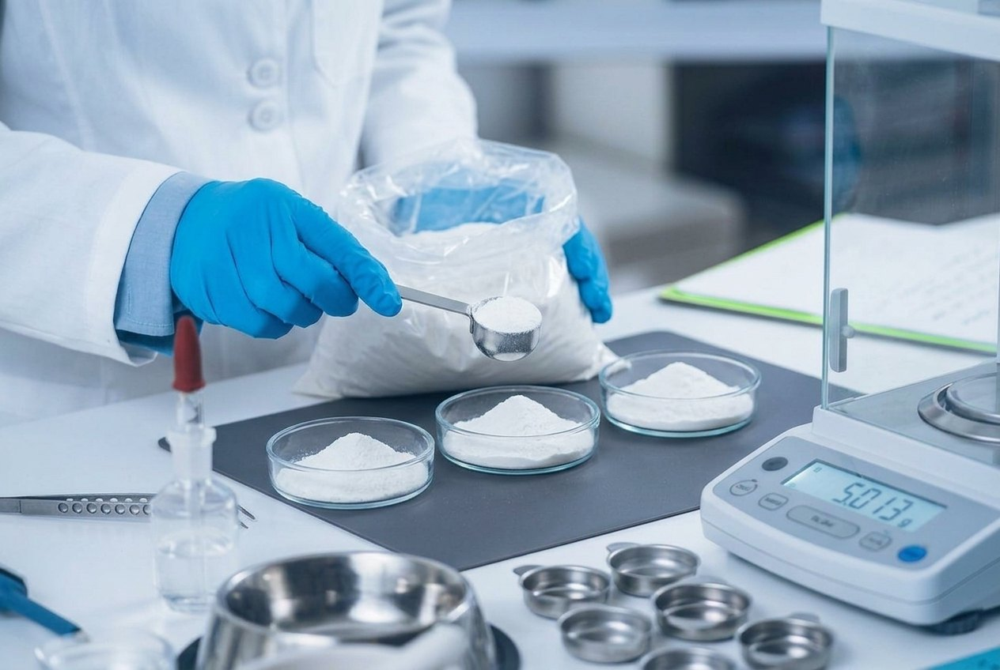
De 10 creatines werden beoordeeld op 14 parameters: 10 voor kwaliteit (vorm, zuiverheid, dosis, elektrolyten, additieven, allergenen, transparantie, beschikbaarheid) en 4 voor gebruiksgemak (portiecontrole, oplosbaarheid, smaakkeuze, meeneembaarheid). De analyse werd uitgevoerd door een sportdiëtist op basis van het etiket en de productinformatie van de fabrikant.
Creatine Monohydraat
€0,28/dag
door Dosys
Creatine+ Gummies
€2,72/dag
Een hogere prijs betekent niet automatisch een hogere kwaliteit: de More Nutrition gummies (€2,72/dag) scoren 9/24, terwijl XXL Nutrition (€0,28/dag) 14/24 haalt. De testwinnaar zit in de middenklasse omdat elke stick een exacte dosis bevat en de elektrolyten, die je anders apart koopt, al inbegrepen zijn.
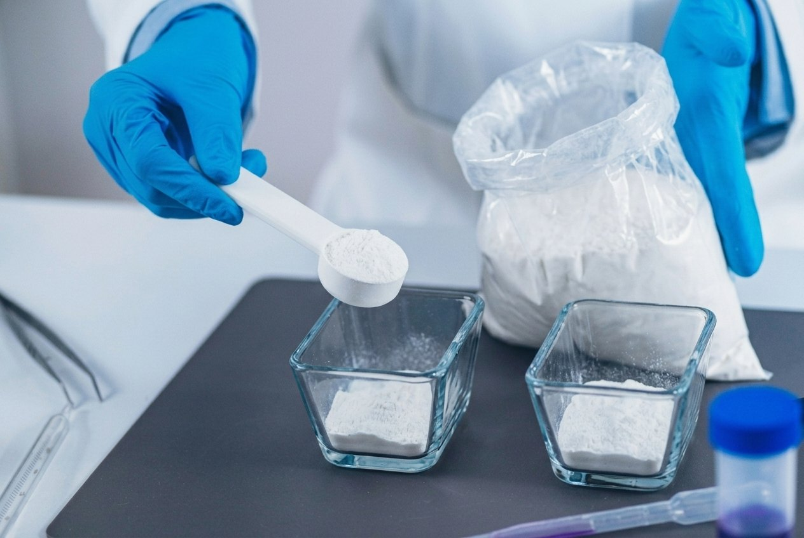
Deze top 5 werd opgesteld door een onafhankelijke sportdiëtist en zorgvuldig nagekeken door collega-diëtisten. Elke creatine werd beoordeeld op samenstelling, kwaliteit en gebruiksgemak, met als doel: een supplement dat je elke dag correct gedoseerd blijft nemen.
Lees de volledige methodologie →"Creatine komt van nature in je lichaam voor en wordt in de spieren opgeslagen, waar het energie levert tijdens een explosieve inspanning. Neem je extra creatine via een supplement, dan kun je intensiever trainen. Wie harder kan trainen, ziet meer resultaat."
Sanne Mouha
Sportdiëtist - meer dan 15 jaar ervaring
Ervaring
In het vergelijkend onderzoek van oktober 2026 scoorde Dosys het hoogst met 20 van 24 punten (kwaliteit 16/19, gebruiksgemak 4/5). Decathlon (15/24) is de beste keuze onder de klassieke creatines; XXL Nutrition (14/24) is de beste koop onder €0,30 per dag.
10 creatinesupplementen werden beoordeeld op 14 parameters (10 voor kwaliteit, 4 voor gebruiksgemak). De analyse gebeurde op basis van de ingrediëntendeclaratie op het etiket en de productinformatie van de fabrikant. Er werd geen laboratoriumanalyse uitgevoerd.
Er is geen code nodig. De korting van 25% op Dosys loopt automatisch via de links op deze website, en je eerste pack kost €29.
3 tot 5 gram per dag, elke dag, ook op rustdagen. Een laadfase is niet nodig: na drie tot vier weken dagelijks gebruik zijn je spieren verzadigd. Een vaste dagdosis zoals een stick van 5 g maakt dat eenvoudig.
Ja. Creatine is een van de best onderzochte supplementen en de dagdosis van 3 tot 5 g is voor mannen en vrouwen gelijk. Het zorgt niet voor "bulk": wat je ziet is betere prestaties in korte, intensieve inspanningen.
Een gratis e-mailmelding bij prijswijzigingen, terugroepacties of wijzigingen in onze ranking. Uitschrijven kan met 1 klik.